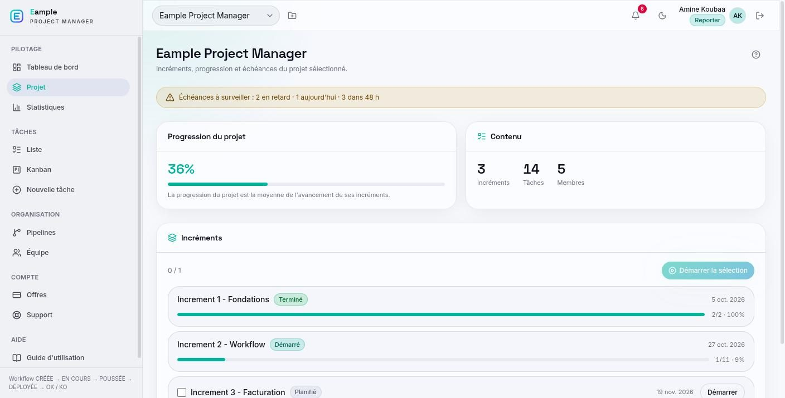
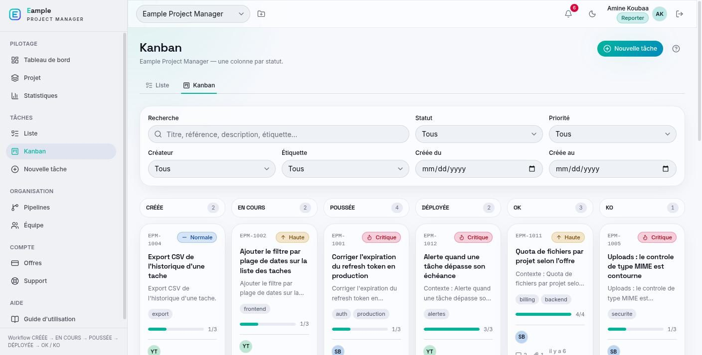
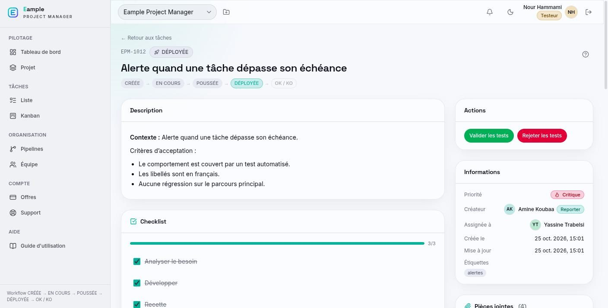
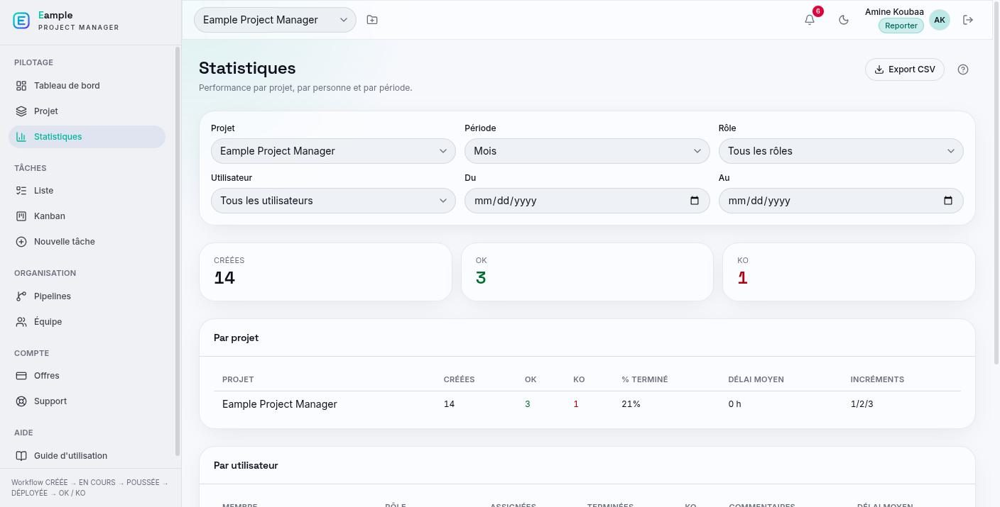

A project management platform where a software team plans its projects in delivery phases, moves each task through a fixed developer, project lead and tester workflow, and keeps support, billing and statistics in the same place.
3roles: project lead, developer, tester
6task stages, from created to validated or rejected
3kinds of support tickets
4subscription plans with usage limits
At a glance
Project Manager is a web application for software teams. An organisation creates its projects, splits the work into dated delivery phases, then into tasks. Each task follows the same path: a developer builds it, the project lead reviews it and sends it to testing, and a tester validates or rejects the result.
Every step is reserved for one role, recorded in the task history and announced by email to the people concerned. Around this core, the platform adds a task board, deadline alerts, cross-project pipelines, statistics with exports, support tickets, subscription billing and a built-in user guide.
Who it's for
Project lead (reporter)
Creates projects, delivery phases and tasks, starts each phase, reviews delivered work and sends it to testing or back to the developer with a written reason. The organisation owner also manages the subscription.
Developer
Picks up assigned tasks, works through their checklist, marks the work as ready for review and resumes tasks that were rejected.
Tester
Sees the tasks waiting for tests, validates them or rejects them with a mandatory explanation that the developer and project lead receive.
The problem it solves
Unclear task status
Without a shared tool, the state of a task lives in messages and meetings. Here each task has one visible stage that only the right role can change.
Rejections without context
A rejected review or a failed test always comes with a written reason, saved on the task, so the developer knows what to fix.
Scattered follow-up
Deadlines, workload, support requests and billing usually sit in separate tools. The platform brings them together for the whole team.
Main features
Projects and phases
Projects split into dated delivery phases, with progress, team members and a banner for late or upcoming deadlines.
Tasks and board
Searchable task list and a board with one column per stage, filters by status, priority, creator, label and date.
Rich task sheets
Formatted description, checklist, labels, due date, assignee, attachments and comments with mentions.
Role-based workflow
Each move between stages is limited to one role, with a written reason required for every rejection.
History and notifications
A dated history of every change, comment and file, and email notifications to the roles concerned.
Deadline alerts
Tasks and phases grouped as overdue, due today or due within 48 hours, shown in the top bar.
Pipelines
Cross-project groups of tasks with their own members, deadline, notes and status, without moving tasks out of their project.
Statistics and exports
Created, validated and rejected work per project, per person, per role and per period, with spreadsheet export.
Support and billing
Tickets for bugs, questions and quote requests, plus subscription plans with usage meters and online payment.
In-app guide
A general guide, a glossary and a help sheet for each page, available from anywhere in the application.
How it works
The project lead creates the task
The task is added to a delivery phase with a description, checklist, priority, due date and assignee. It can only move forward once its phase has started.
The developer starts and delivers
The developer takes the task, completes the checklist and marks it as ready for review. The project lead is notified.
The project lead reviews
The project lead approves the work and sends it to testing, or returns it to the developer with a written reason.
The tester checks the result
The tester validates the task or rejects it, again with a written reason. The developer and project lead are notified either way.
Fix or close
A rejected task goes back to the developer for corrections. A validated task is closed and counted in the statistics, with its full history kept.
Technologies
Interface
ReactBuilds the single-page application and its screens.
TypeScriptTypes the code on both the interface and the server.
ViteRuns the development server and builds the application.
Tailwind CSSStyles the interface, including the light and dark themes.
TanStack QueryLoads data from the server and keeps it up to date.
React Hook Form and ZodHandle forms and check what users enter.
Server & APIs
Node.js and ExpressServe the REST API used by the interface.
JSON Web TokensKeep users signed in through secure cookies.
ZodValidates every request and the server configuration.
NodemailerSends the email notifications for assignments, stage changes, comments and tickets.
Data
MySQLStores organisations, projects, tasks, history, tickets and subscriptions.
TypeORMMaps the data model and applies versioned database changes.
Quality
Strict TypeScriptCatches type errors before the code runs.
Prettier and oxlintKeep the code consistently formatted and checked.
Preview

Project page with progress per delivery phase and deadline alerts.

Task board with one column per stage and filters.

Tester view: validate or reject the tests of a delivered task.

Statistics per project, person and period, with export.
What it brings
Clear responsibilities
Each role sees what it has to act on, and only that role can move a task to the next stage.
A record of every decision
Reviews, tests, comments and files stay attached to the task, with dates and reasons.
Fewer status meetings
Dashboards, alerts and statistics answer the usual questions about progress and deadlines.
One place for the team
Planning, delivery, support and billing are handled in the same application.